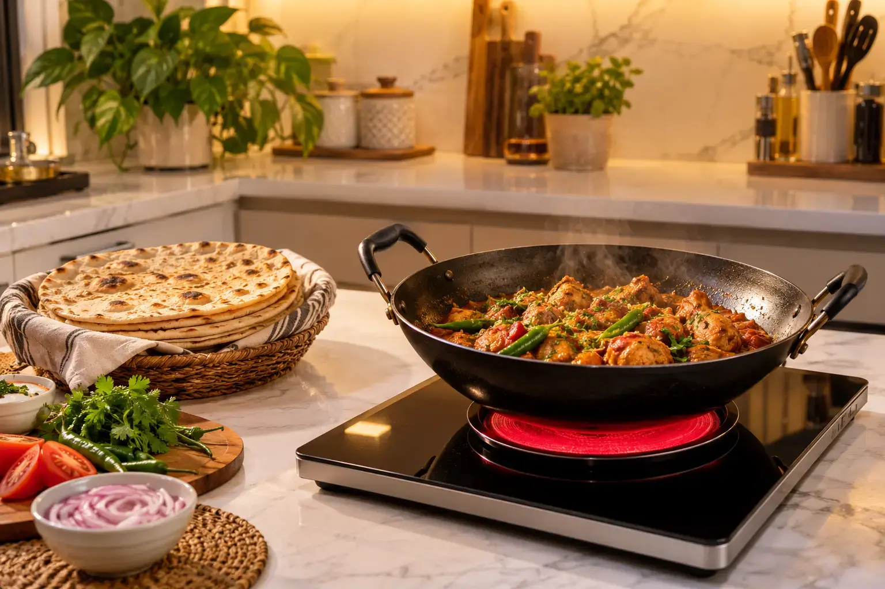
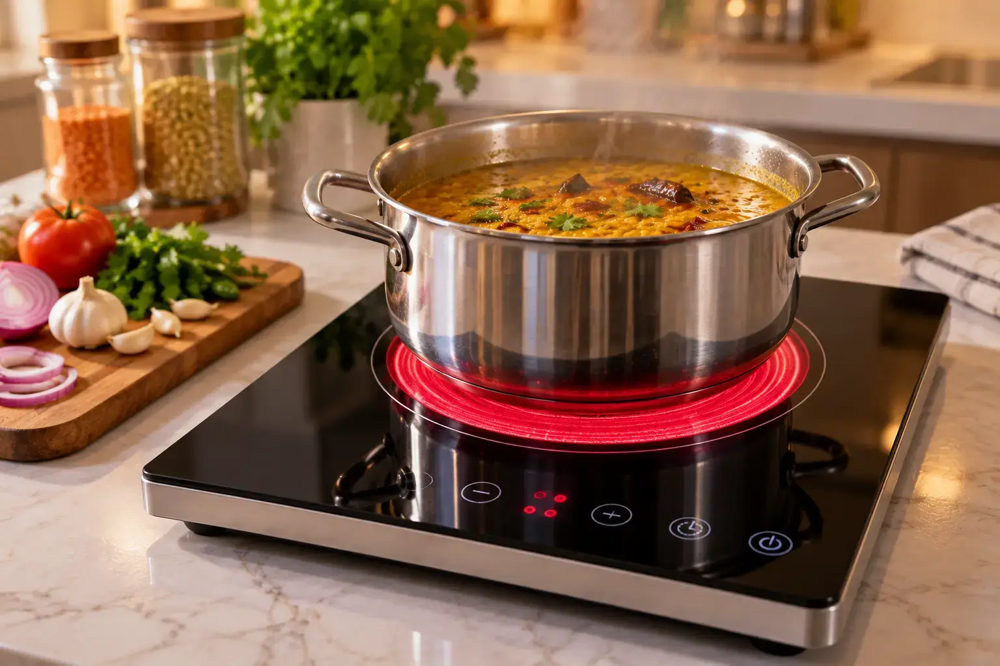

Electric Stove Price in Pakistan 2026
Quick answer: A good electric stove in Pakistan costs Rs 17,500 – Rs 45,000 in 2026. A single-burner infrared cooker such as the Hot Glow-912 starts at about Rs 17,520, a double-burner model like the Hot Glow-920 is about Rs 40,800, and a 2700W commercial hot plate like the GG-Cook King-12 is about Rs 43,200. Most home models use around 1.5 electricity units per hour.

Image slot — upload images/index-hero-1.webp
Image slot — upload images/index-hero-2.webpElectric stove price list in Pakistan (September 2026)
| Model | Type | Power | Price (PKR) |
|---|---|---|---|
| Hot Glow-912 | Single-burner infrared ceramic cooker (portable) | 2200W | Rs 17,520 |
| Hot Glow-B120 | Single-burner infrared cooker | 2200W | Rs 19,110 |
| Hot Glow-920 | Double-burner infrared ceramic hob | 2200W (dual power mode) | Rs 40,800 |
| GG-Cook King-12 | Heavy-duty commercial electric hot plate | 2700W | Rs 43,200 |
Prices from glamgas.com on 2026-09-28. Sale prices change often — always confirm on the product page before ordering.
Why Pakistani homes are switching to electric stoves
Gas load shedding in winter, low pressure at breakfast and dinner time, and rising LPG cylinder refill costs have pushed thousands of families in Karachi, Lahore, Rawalpindi and Peshawar to keep an electric stove as a backup — or to go fully electric, especially homes with solar panels or net metering. An electric chulha plugs into a normal 220V socket, needs no gas line, and gives an open-flame-free kitchen that is easier to clean.
Which type of electric stove should you buy?
- Infrared ceramic cooker – heats any flat-bottom pot (steel, aluminium, iron, ceramic). Best all-rounder for roti, salan and biryani. See our infrared vs induction vs hot plate comparison.
- Induction cooker – fast and efficient but only works with magnetic (iron/steel) cookware; many Pakistani aluminium pots will not work.
- Coil hot plate – cheapest (Rs 1,500 – 3,000) but slow, less efficient and hard to clean. Fine for tea, not for daily family cooking.
- Commercial hot plate – 2500W+ for restaurants and caterers. See hot plate price in Pakistan.
Top electric stoves in Pakistan by use
Glam Gas Hot Glow-912 Infrared Cooker
 Image slot — upload images/home-hot-glow-912-1.webp
Image slot — upload images/home-hot-glow-912-1.webp Image slot — upload images/home-hot-glow-912-2.webp
Image slot — upload images/home-hot-glow-912-2.webpRs 17,520 Rs 21,900 (glamgas.com, checked 2026-09-28)
The best-value entry point: 2200W, light enough to move between kitchen, hostel room or office pantry, and works on a household inverter during load shedding.
- Type: Single-burner infrared ceramic cooker (portable)
- Power: 2200W
- Pot load: 18–20 kg
- Electricity: ≈1.5 units/hour (brand figure)
- Best for: Students, hostels, rented flats, small families, inverter backup
- Warranty: 1 year on electrical parts (glass/body damage not covered)
Glam Gas Hot Glow-B120 Infrared Cooker
 Image slot — upload images/home-hot-glow-b120-1.webp
Image slot — upload images/home-hot-glow-b120-1.webp Image slot — upload images/home-hot-glow-b120-2.webp
Image slot — upload images/home-hot-glow-b120-2.webpRs 19,110 Rs 27,300 (glamgas.com, checked 2026-09-28)
Same 2200W power in a body designed to sit flush in a marble counter — or on top of it. A strong pick if you want a permanent, gas-hob look without a gas connection.
- Type: Single-burner infrared cooker — built-in or tabletop
- Power: 2200W
- Pot load: 18–20 kg
- Electricity: ≈1.5 units/hour (brand figure)
- Best for: Families who want a marble-top built-in look without a gas line
- Warranty: 1 year on electrical parts (glass/body damage not covered)
Glam Gas Hot Glow-920 Dual Burner Infrared Cooker
 Image slot — upload images/home-hot-glow-920-1.webp
Image slot — upload images/home-hot-glow-920-1.webp Image slot — upload images/home-hot-glow-920-2.webp
Image slot — upload images/home-hot-glow-920-2.webpRs 40,800 (glamgas.com, checked 2026-09-28)
Two burners mean salan and roti at the same time. The choice for a full family kitchen switching from a gas hob.
- Type: Double-burner infrared ceramic hob — built-in or tabletop
- Power: 2200W (dual power mode)
- Pot load: 15–18 kg per burner
- Electricity: ≈1.5 units/hour per burner (brand figure)
- Best for: Full family kitchens cooking two dishes at once
- Warranty: 1 year on electrical parts (glass/body damage not covered)
Glam Gas GG-Cook King-12 Commercial Electric Hot Plate
 Image slot — upload images/home-gg-cook-king-12-1.webp
Image slot — upload images/home-gg-cook-king-12-1.webp Image slot — upload images/home-gg-cook-king-12-2.webp
Image slot — upload images/home-gg-cook-king-12-2.webpRs 43,200 Rs 48,000 (glamgas.com, checked 2026-09-28)
A 2700W commercial-grade hot plate with digital temperature control and a timer — built for woks, big degchis and all-day restaurant use.
- Type: Heavy-duty commercial electric hot plate with digital display & timer
- Power: 2700W
- Pot load: Large woks & heavy pots
- Electricity: Up to 2.7 units/hour at full power
- Best for: Restaurants, dhabas, caterers, heavy wok cooking
- Warranty: 1 year on electrical parts (glass/body damage not covered)
How much electricity does an electric stove use?
Units = kilowatts × hours. A 2200W stove running at full power for one hour uses up to 2.2 units; because the thermostat cycles on and off, the brand quotes about 1.5 units per hour of real cooking — roughly Rs 60–70 per hour. Full breakdown in our electric stove wattage and bill guide.
Buying checklist
- Power: 2000W+ for daily cooking, 2500W+ for commercial.
- Pot load rating: 15 kg+ if you cook biryani or nihari in a big degchi.
- Cooling fan and overheat protection.
- Cookware compatibility — infrared works with everything flat-bottomed.
- 1-year warranty with a service network in your city.
- Inverter/solar compatibility if you face load shedding.
Looking for a stove you can carry? Read portable electric stove price in Pakistan. Want our ranked pick? See the best electric stove in Pakistan. City delivery details are on the city prices page.
Frequently Asked Questions
What is the electric stove price in Pakistan in 2026?
Good infrared electric stoves cost about Rs 17,500 to Rs 45,000. The Glam Gas Hot Glow-912 is about Rs 17,520, the Hot Glow-B120 about Rs 19,110, the dual-burner Hot Glow-920 about Rs 40,800 and the commercial GG-Cook King-12 about Rs 43,200 (glamgas.com, September 2026).
Which electric stove is best for roti and salan?
An infrared ceramic cooker, because it heats a flat tawa evenly and works with every flat-bottom pot. Round-bottom karahis do not sit flat on glass tops.
How many units does an electric stove use per hour?
A 2200W model uses up to 2.2 units at full power; in normal cooking the brand quotes about 1.5 units per hour, roughly Rs 60–70.
Can an electric stove run on a UPS or inverter?
Yes, 220V infrared cookers run on household inverters and solar systems, provided the inverter has at least 2.5–3 kW of spare capacity.
Is an electric stove cheaper than an LPG cylinder?
For many families, yes — especially with solar or net metering. Compare your per-unit tariff × about 1.5 units per cooking hour against your monthly cylinder refill cost.